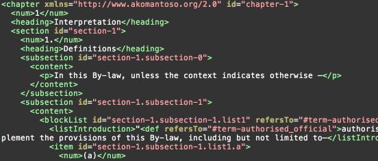
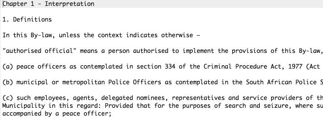

OpenByLaws.org.za
Greg Kempe
Code for South Africa
Using data and technology to promote informed decision-making that drives social change.
- Civic technology
- Open data
- Data journalism
Data Journalism Academy
- Africa's first data journalism academy
- 3 months, intensive, hands-on
- Winter 2016 applications open soon
Vote4TheBudget.org
Wazimap.co.za
OpenByLaws.org.za
OpenByLaws.org.za
Making local legislation freely available and easy to read and share.
How many dogs can you own? Where can you park your car? What you can do on the beach? Can you spit in public?

Freely available
Discoverable
Accessible
Open
Easy to read and share
Consolidated
Consistently and pleasantly formatted
Navigable
Shareable
Legislation as open data
‘Open knowledge’ is any content, information or data that people are free to use, re-use and redistribute — without any legal, technological or social restriction.
Freely available
Open license
Machine-friendly
By-laws in South Africa
- Let's make it easier to share, learn and re-use
- What does success look like?
- Community
Indigo Platform
Web platform for consolidating and publishing legislation


Indigo Platform
- Content
- Structure
- Presentation
- Like Markdown for legislation
Durban By-law Liberation Day
Saturday 27 February
Legal geeks, law librarians & editors, city reps, techies...
RSVP: Open Data Durban Meetup page bit.ly/1WFESum
Join our Community
facebook.com/openbylaws.org.za
Geeky stuff
See you on Saturday!